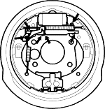
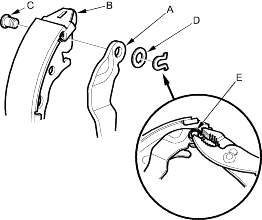
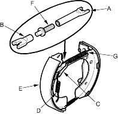
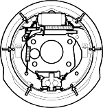

- Connect the parking brake cable to the parking brake lever.
- Apply rubber grease (Solvest 113 or equivalent) on the sliding surfaces as illustrated. Wipe off any excess. Do not get grease on the brake linings.


Sliding surfaces

- Install the parking brake lever (A) on the rear brake shoe (B) and secure it with the pivot pin (C), wave washer (D) and a new U-clip (E). Pinch the U-clip securely to prevent it from coming off.

- Install the self-adjuster (C) and self-adjuster spring (D) on the front brake shoe (E).

- Assemble the brake shoes with clevis A, adjuster bolt (F), clevis B and the upper return spring (G).
NOTE: Thread the adjuster bolt fully into clevis A.
- Apply Molykote 44MA grease onto the sliding surfaces as illustrated. Wipe off any excess. Do not get grease on the brake linings.
Sliding surfaces  O
O Backside edge of the shoe

- Install the shoe assembly on the backing plate by fitting the top of the shoes onto the wheel cylinder pistons and the bottom of the shoes onto the locating plate.